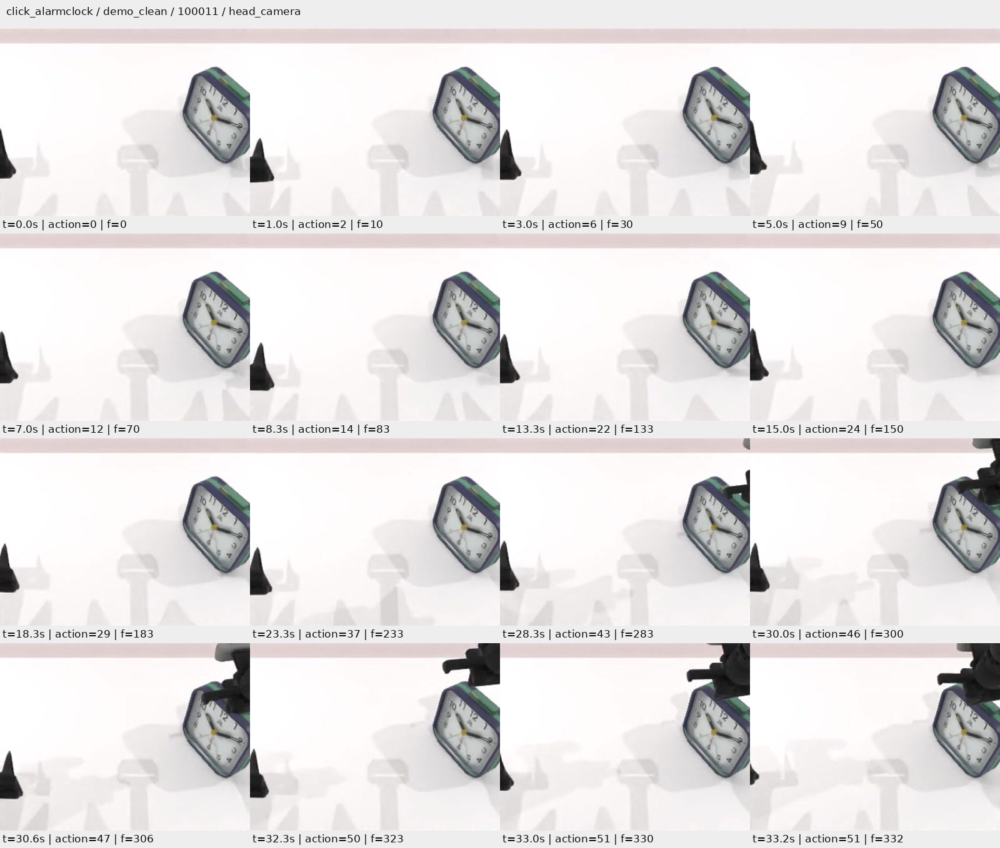
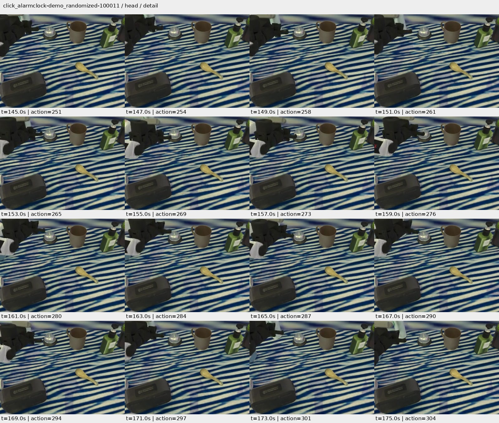
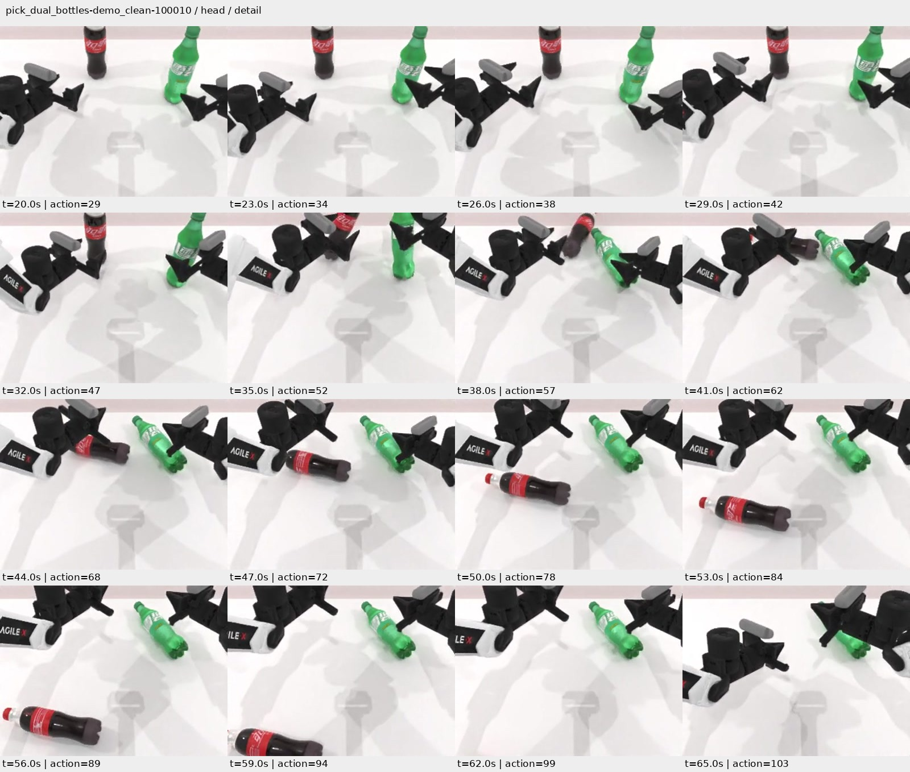
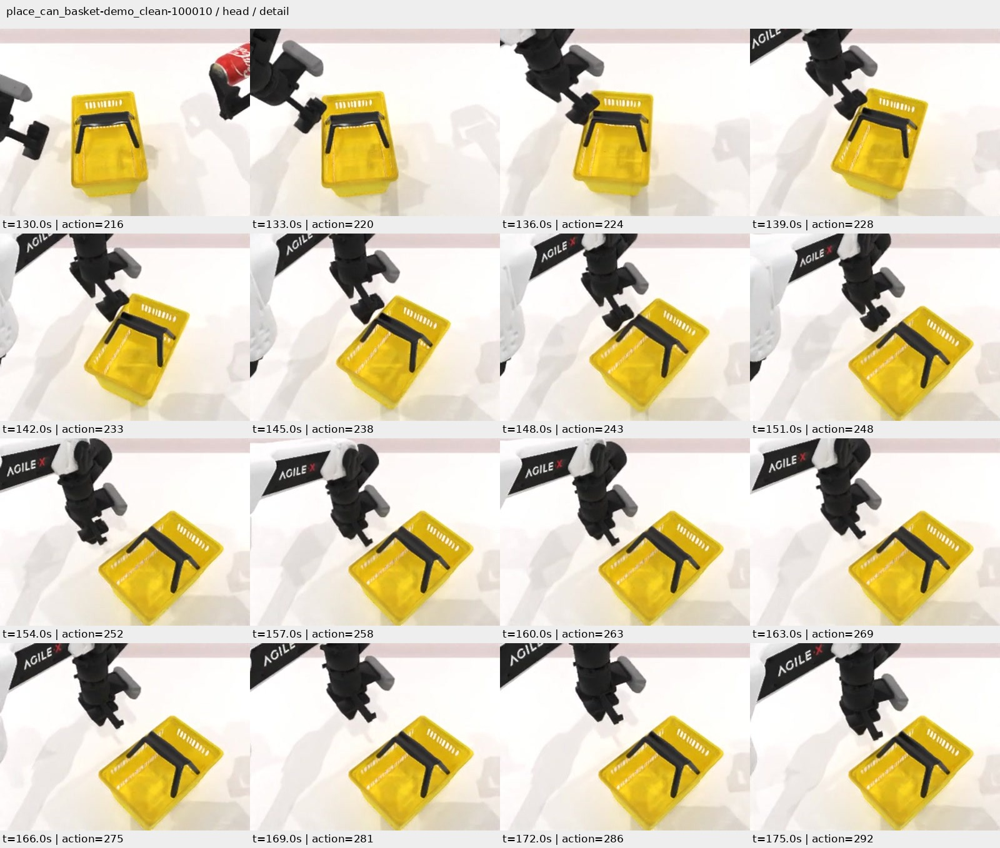
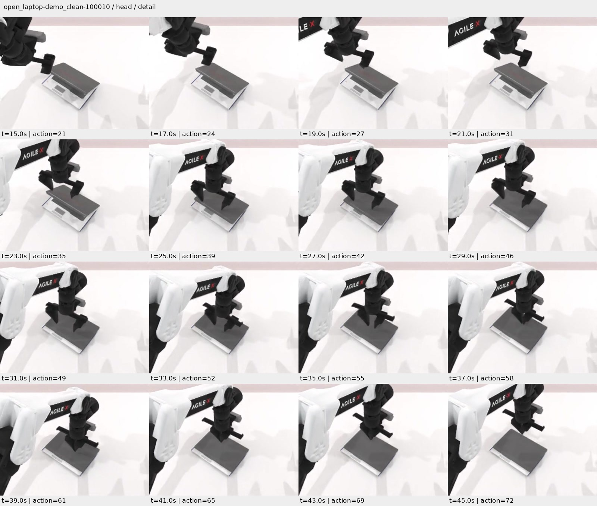
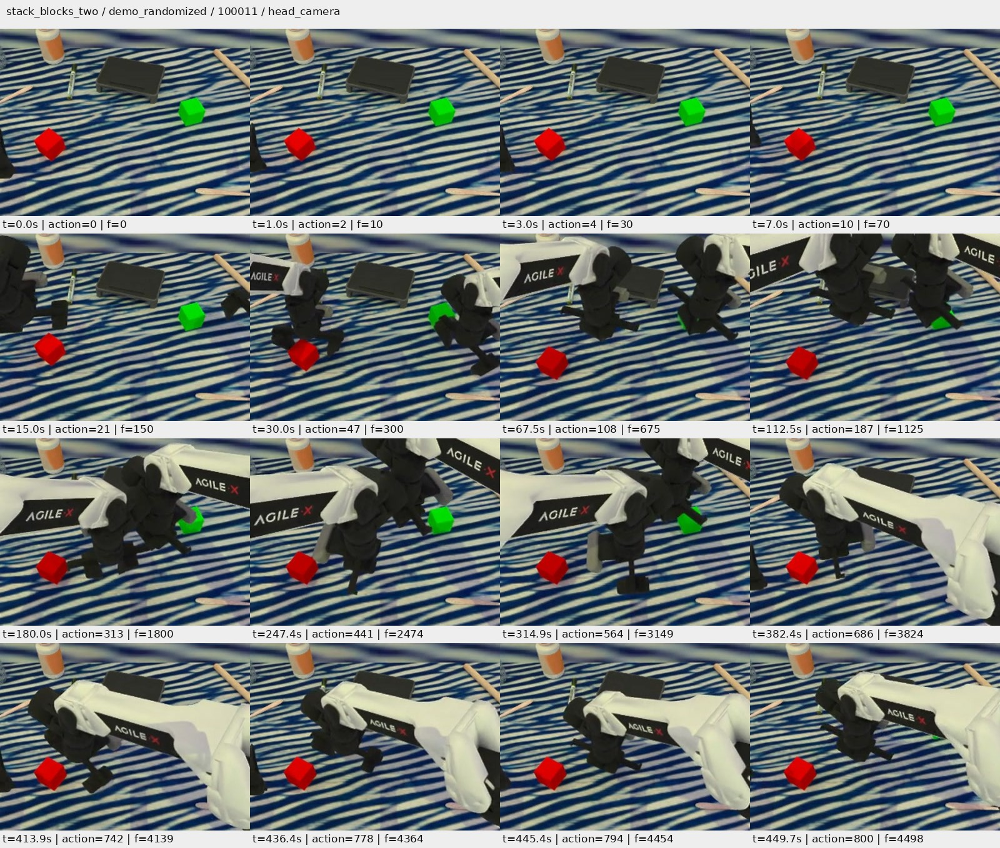

01 / 成功参照
成功参照：到达闹钟顶部
click_alarmclock · Clean · seed 100011 · 官方成功
Activate the dark blue clock by clicking its top button
动作 51/400回合墙钟 51.0 秒录像 33.3 秒
头部录像 · 全局录像 · 动作轨迹 · 回合记录
可观察现象
- 约 28–33 秒，夹爪到达闹钟顶部；第 51 个动作后官方判定成功。
- 这是短程接触任务的成功实例。闹钟为静态对象，物体位姿不变不等于没有接触。

头部时序帧 · 全局时序帧。点击图片查看原尺寸；时间标注均为仿真时间。
可能原因，尚未证实
官方判定与证据边界
官方条件检查夹爪与闹钟接触点的位置及手臂条件；不是只检查画面中夹爪接近目标。
- 与 Randomized 的同整数 seed 并非同一物理场景：对象变体、位置和桌面高度均不同，不能只归因于背景纹理。
轨迹摘要与来源哈希
02 / 目标选择疑似错误
目标交互偏离：在桌铃附近反复操作
click_alarmclock · Randomized · seed 100011 · 官方失败
Click the center top button of the alarm-clock with beige screen
动作 400/400回合墙钟 157.3 秒录像 226.8 秒
头部录像 · 全局录像 · 动作轨迹 · 回合记录
可观察现象
- 目标是画面前方的黑色矩形数字闹钟。头部和全局视角中，夹爪多次在其他小物体及银色圆形桌铃附近操作。
- 145–175 秒密集时序帧中，夹爪反复下降到桌铃附近，再抬起和调整；目标闹钟仍在前方。
- 回合执行到 400/400 动作上限，官方判定失败。

头部时序帧 · 全局时序帧。点击图片查看原尺寸；时间标注均为仿真时间。
可能原因，尚未证实
- 可能存在目标识别或指令与对象对应错误；也可能包含接近路径/接触控制问题。录像不能揭示模型内部识别或注意力。
官方判定与证据边界
官方要求通过手臂条件，且夹爪与闹钟接触位置靠近其指定功能点；普通桌铃不满足该目标条件。
- 未记录完整逐步闹钟接触状态，不能声称整个回合从未接触闹钟。
- 不能用 Clean 与 Randomized 的同整数 seed 当作同场景配对实验。
轨迹摘要与来源哈希
03 / 抓取/恢复失败
抓取接触后倾倒，随后丢失一个目标
pick_dual_bottles · Clean · seed 100010 · 官方失败
Pick up the brown bottle with red label and the medium green bottle using separate hands.
动作 400/400回合墙钟 140.2 秒录像 239.5 秒
头部录像 · 全局录像 · 动作轨迹 · 回合记录
可观察现象
- 约 20–32 秒双臂接近瓶子；35–41 秒两只瓶子在夹爪接近过程中倾斜、倒下。
- 44–65 秒红标签瓶滚向相机和桌沿；后续轨迹中它的对象原点高度降至约 0.034 米，较初值低约 0.706 米。绿色瓶仍横躺在桌上。
- 后续手臂仍在动作，但未恢复双瓶举起，最终执行到 400/400 动作。

头部时序帧 · 全局时序帧。点击图片查看原尺寸；时间标注均为仿真时间。
可能原因，尚未证实
- 可能涉及抓取对位、闭合时机或接触控制，以及目标倒下后的恢复不足。
官方判定与证据边界
官方要求两个瓶子的功能点到达各自目标附近并达到规定高度；本例未形成持续双瓶抬起。
- 没有证据表明先建立了稳定抓持，因此不把本例写成“稳定抓起后滑脱”。
- 轨迹对象原点的高度不同于官方成功判定使用的功能点高度。
轨迹摘要与来源哈希
04 / 多阶段/双臂协作失败
罐子已抓起，放入与提篮步骤未完成
place_can_basket · Clean · seed 100010 · 官方失败
Use the right arm to grab the small aluminum red drink can, place it into the basket with black handle, and lift the basket with black handle using the other arm.
动作 700/700回合墙钟 297.4 秒录像 420.3 秒
头部录像 · 全局录像 · 动作轨迹 · 回合记录
可观察现象
- 约 30 秒罐子已被夹持，63–105 秒可见其被举起；动作块边界记录的最大高度增量约 22.6 厘米。
- 130–175 秒，另一只手在篮子边缘/把手附近反复接近，篮子在桌面上滑动和转动；罐子仍由另一只手持在篮外。
- 篮子在记录点的最大位移约 29.9 厘米，而高度增量仅在数值误差量级。终态罐子仍在篮外，回合达到 700/700 动作。

头部时序帧 · 全局时序帧。点击图片查看原尺寸；时间标注均为仿真时间。
可能原因，尚未证实
- 主要可疑环节是放入目标的对齐、释放以及另一只手的提篮协作；不能将本例概括为“模型不会抓罐子”。
官方判定与证据边界
指令包含抓罐、放入篮子和另一只手提篮；官方还检查篮子姿态、罐篮接触、两者抬高以及离桌等条件。
- 对象位姿取自每个动作块边界，不是每个物理步的连续极值；记录点未抬起不等于能排除所有极短暂离桌。
- 未保存全部逐步接触条件，不从单一高度指标重建官方评分。
轨迹摘要与来源哈希
05 / 接触方向/后续进展失败
开盖动作变成下压合盖，后续反复调整
open_laptop · Clean · seed 100010 · 官方失败
Pull the screen of the portable folding Toshiba laptop.
动作 700/700回合墙钟 254.8 秒录像 423.0 秒
头部录像 · 全局录像 · 动作轨迹 · 回合记录
可观察现象
- 初始笔记本盖有开缝；15–23 秒夹爪接近上沿，约 25–31 秒盖子被向下压，缝隙缩小直至合拢。
- 33–45 秒以及之后的全段时序帧中，夹爪持续调整、开合，未形成可见的成功开盖。
- 动作与状态继续变化，最终达到 700/700 动作；这是任务进展停滞，不是模型服务或仿真卡死。

头部时序帧 · 全局时序帧。点击图片查看原尺寸；时间标注均为仿真时间。
可能原因，尚未证实
- 可能是接触位置、施力/运动方向或对铰链操作方式的理解不合适。仅凭本回合不能确定哪项是根因。
官方判定与证据边界
官方要求盖子关节达到其活动范围的 40% 阈值，并满足夹爪末端到指定接触点的距离条件。
- 未记录铰链关节角和 TCP 距离，不能数值分解官方成功条件。
- 笔记本底座位姿固定不能作为盖子不动的证据；开合现象来自多时刻录像。
轨迹摘要与来源哈希
06 / 抓取/任务进展失败
反复接近和调整，未建立抬起与堆叠
stack_blocks_two · Randomized · seed 100011 · 官方失败
Use the left arm to move red block to the center, then set the right arm and stack green block on red block.
动作 800/800回合墙钟 250.7 秒录像 449.9 秒
头部录像 · 全局录像 · 动作轨迹 · 回合记录
可观察现象
- 15–30 秒双臂接近两块积木，后续交叉和反复调整位置；整段双视角时序帧中两块积木仍分开放在桌上。
- 动作块边界中，红块最大位移约 4.31 厘米，绿块约 0.42 厘米；两者没有可辨识的持续高度增加。
- 未形成可见堆叠，执行到 800/800 动作。

头部时序帧 · 全局时序帧。点击图片查看原尺寸；时间标注均为仿真时间。
可能原因，尚未证实
- 可能涉及目标抓取对齐、夹持建立或操作顺序；当前证据不足以确定是视觉定位还是运动控制主导。
官方判定与证据边界
官方检查绿块位于红块上方约 5 厘米的空间容差内，并要求两只夹爪打开。
- 红块有位移，不能写成“全程没有任何接触”。
- 本例来自第四恢复段，原联动取消尝试另列历史中断；本例仅分析其恢复后完成的正式结果。
轨迹摘要与来源哈希
这些证据能说明什么
可观察问题包括目标交互偏离、抓取时碰倒对象、多阶段协作未完成、操作方向不合适，以及反复动作却没有任务进展。失败并不都等于“抓不起来”，也不能统一归结为模型服务卡住。
本轮已经使用官方推理配置，但这些案例仍不足以把差异拆成“模型能力”或“推理策略”各占多少。旧基座 500 回合、Research5 与本轮的专家筛选、场景及协议不一致；本轮又有四次恢复、五个模型进程段，噪声流不连续。因果判断仍需要另外授权的同场景、同输入、控制随机性的比较，本次不追加实验。
五个失败例均耗尽自身动作上限，属于有效策略失败；历史运行中断另列，不能混入这些失败类别。对象位置是动作块边界样本，不能替代连续接触记录或官方功能点判分。
关于此前锤击案例：录像末尾完整；官方成功条件是指定位置误差与锤子/方块接触，没有敲击速度或冲击阈值。“官方成功”与画面中明显完成一次敲击需要区分，保留原评分。
视觉检查使用整段时序图与关键段加密帧，不表示人工逐帧观看了所有帧。完整解码、抽帧位置、视频 SHA256、对象轨迹摘要与方法边界见 分析收据、视频验收索引 和 密集帧索引。